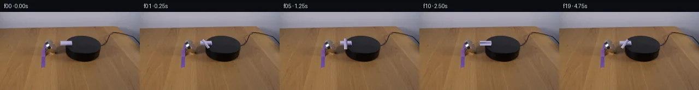

![首帧]()

Round 00
2026-11-05T21:14:39.416318+00:00像素候选变化代码 +139/−0inspection 更新
pixels f2164e875fcdc098 · code c6fa4e048ed89938
查看本轮 generate.py 真实 diff
--- previous/generate.py +++ current/generate.py @@ -0,0 +1,139 @@ +"""Generate 20-frame domino rotation animation on black platform.""" +import numpy as np +from PIL import Image +from scipy.ndimage import rotate, label, binary_fill_holes +from pathlib import Path +import sys +sys.path.insert(0, str(Path(__file__).parent)) +from artifact_io import save + +case_dir = Path(__file__).parent +img = np.array(Image.open(case_dir / 'first_frame.png')).astype(np.uint8) +H, W = 144, 256 + +# ── Domino bounding box ── +dy1, dy2 = 56, 62 # rows (top to bottom+1) +dx1, dx2 = 111, 131 # cols (left to right+1) + +# ── 1. Create clean background (inpaint domino region) ── +bg = img.copy() + +# Sample platform pixels from above (row 55) and below (row 62) the domino +# Row 55 is table surface just above the platform edge +# Row 62 is the platform surface below the domino +# Interpolate between them for a smooth transition +for y in range(dy1, dy2): + frac = (y - dy1) / (dy2 - dy1) # 0 at top, 1 at bottom + for x in range(dx1, dx2): + top_px = img[dy1 - 1, x].astype(float) + bot_px = img[dy2, x].astype(float) + # Simple linear interpolation between top and bottom reference rows + bg[y, x] = np.clip((1 - frac) * top_px + frac * bot_px, 0, 255).astype(np.uint8) + +# ── 2. Build domino mask and extract domino pixels ── +domino_region = img[dy1:dy2, dx1:dx2] +brightness = domino_region.astype(float).sum(axis=2) # (h, w) + +# Hard mask: bright core of the domino +hard_mask_2d = brightness > 380 +# Fill small holes in the mask +hard_mask_2d = binary_fill_holes(hard_mask_2d) + +# Soft alpha for blending at edges +alpha_2d = np.clip((brightness - 320) / 80.0, 0.0, 1.0) +alpha_2d[hard_mask_2d] = 1.0 # core is fully opaque + +# Also include the areas that are significantly different from the background +bg_region = bg[dy1:dy2, dx1:dx2].astype(float) +diff = np.abs(img[dy1:dy2, dx1:dx2].astype(float) - bg_region).sum(axis=2) +edge_alpha = np.clip(diff / 60.0, 0.0, 1.0) +alpha_2d = np.maximum(alpha_2d, edge_alpha) +alpha_2d = np.clip(alpha_2d, 0.0, 1.0) + +# ── 3. Extract domino pixels with alpha ── +domino_rgba = np.zeros((dy2 - dy1, dx2 - dx1, 4), dtype=np.float64) +domino_rgba[:, :, :3] = img[dy1:dy2, dx1:dx2].astype(np.float64) +domino_rgba[:, :, 3] = alpha_2d * 255.0 + +# ── 4. Generate frames ── +frames = [img.copy()] # frame 0 = exact first frame + +# Rotation parameters +domino_center_y = (dy1 + dy2) / 2.0 # 59.0 +domino_center_x = (dx1 + dx2) / 2.0 # 121.0 + +# 3 full clockwise rotations over 5 seconds +total_rotation = -1080.0 # degrees (negative = clockwise in image coords) + +for t in range(1, 20): + angle = t * total_rotation / 20.0 # degrees this frame + + # Rotate the domino RGBA image about its center + # scipy.ndimage.rotate: positive angle = counter-clockwise + # We want clockwise, so we use negative angle + # reshape=True to expand the output to fit the rotated content + rotated = rotate( + domino_rgba, + angle, + axes=(1, 0), # rotate in (x, y) plane + reshape=True, + order=3, # bicubic interpolation + mode='constant', + cval=0.0, + prefilter=True, + ) + + # The rotated image center + rh, rw = rotated.shape[:2] … diff truncated; 52 more lines …